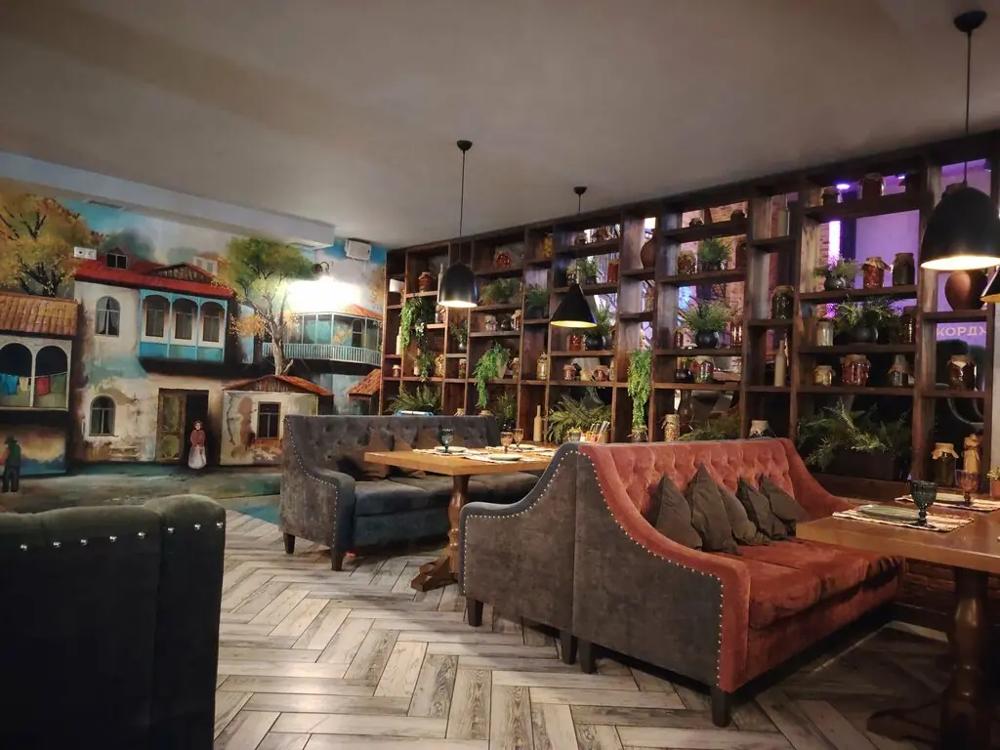
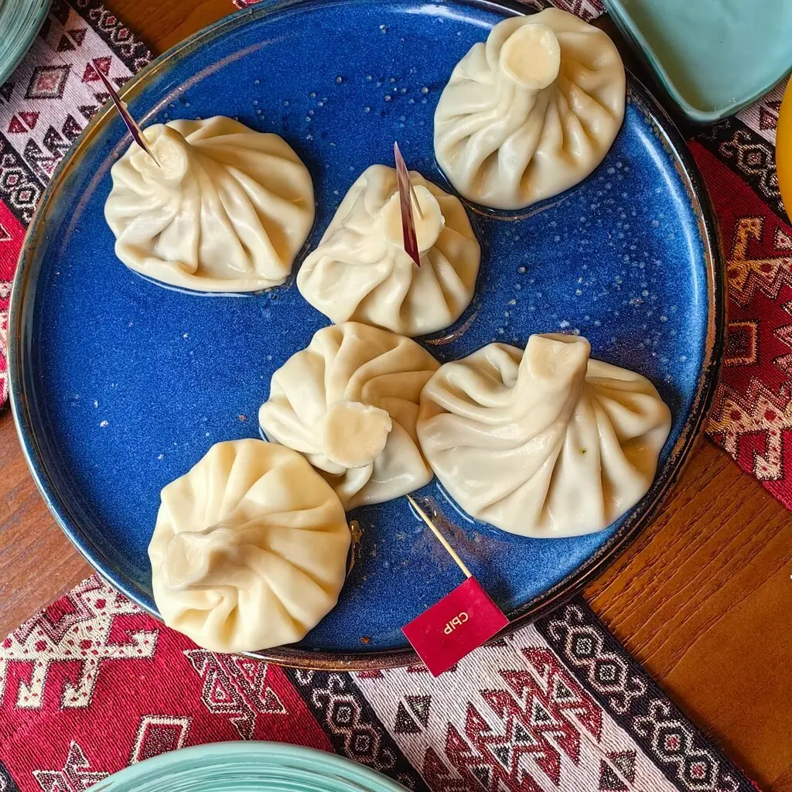
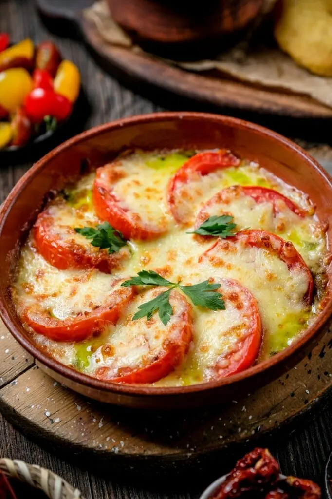
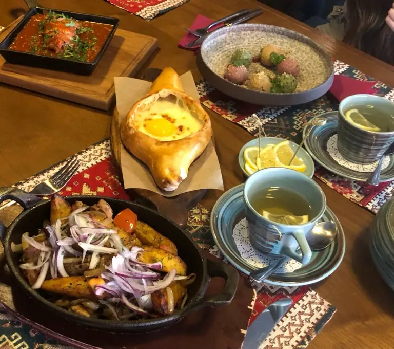
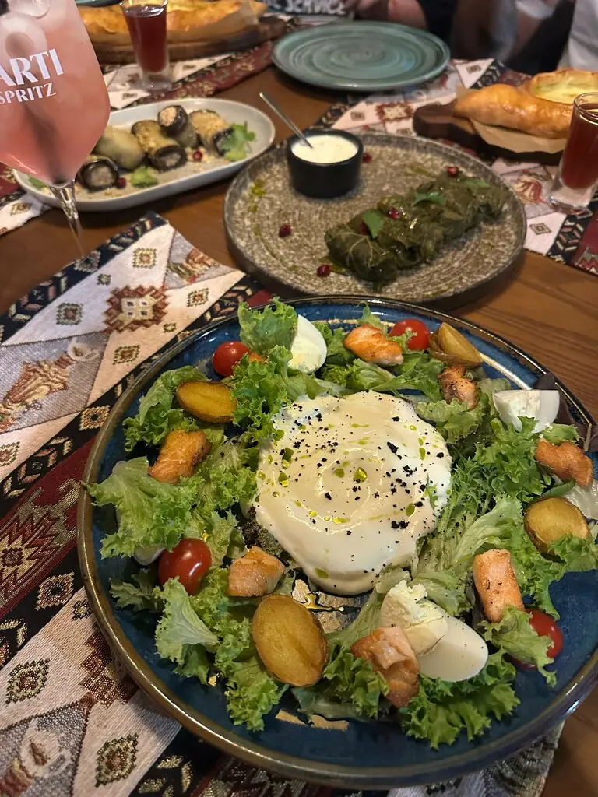
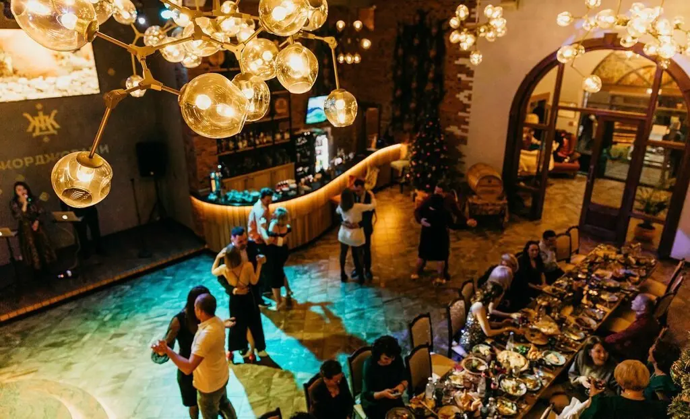

Джорджовани
Грузинское застолье, как в доме у большой семьи: полки с кувшинами до потолка и стол, который не заканчивается.
5,0 · 1322 оценки
С полки на стол




Что заказать
Хинкали
Большая тарелка на компанию, и ещё тарелка следом.
Хачапури
Горячим и сразу к столу.
С мангала
Мясо с овощами и грузинскими соусами.
Закуски
Томаты с сыром и большие салаты.
Блюда по фото. Полное меню с ценами добавим из вашего прайса.
Банкетный зал
от 4 500 ₽
Живая сцена, танцы и 110 мест. Отмечайте день рождения, юбилей или просто большую встречу.

Отзывы
Я оставил свои вещи на столе, а Александра их нашла, догнала меня и вернула!Гость
Приятные официанты! Кухня на высшем уровне! Всем рекомендую!Константин Иванов
Очень вкусная кухня, сервис на высшем уровне!Гость